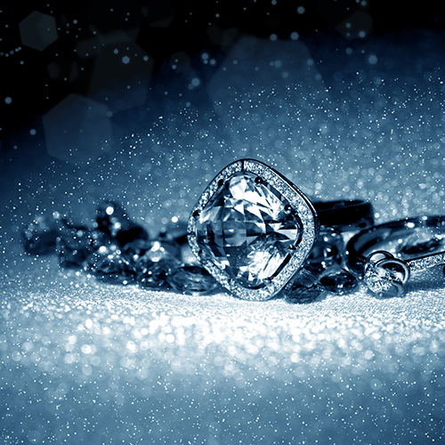

Покрытие различных предметов тончайшим слоем золота придумали еще в Древней Индии и Египте. Искусством золочения владели народы Америки задолго до открытия ее Колумбом. Золочение в России известно с IX века, когда позолоту стали наносить на иконы и церковную утварь. И по сей день, в производстве недорогих ювелирных изделий, широко распространен прием облагораживания различных сплавов покрытиями из драгоценных металлов.
Современная технология представляют собой гальванический процесс осаждения ионов золота, серебра и других драгметаллов на металлическую поверхность из электролита. Серебрение и нанесение позолоты производится с применением цианистых и бесцианистых электролитов на основе комплексных солей золота и серебра. Толщина наносимого слоя обычно составляет от 1 до 50 микрон. Для повышения прочности покрытия предварительно может наноситься никелевый или медный подслой.
Нанесение драгоценных металлов применяется не только при изготовлении и ремонте ювелирных изделий. Золочение и покрытие серебром значков, часовых корпусов, зажигалок, портсигаров, авторучек — один из приемов создания престижной сувенирной продукции. В микроэлектронике серебрят и золотят тонкие контакты микропроцессоров для повышения электропроводности и защиты от коррозии.
Помимо серебра и золота для нанесения покрытий используются и драгоценные металлы платиновой группы. В последнее время актуальным стало покрытие родием — родирование.
Родий обладает наибольшей твердостью среди драгоценных металлов. Покрытия из него не только стойки и долговечны, но и очень эффектно выглядят.
Покрытие родием позволяет изготавливать модные и одновременно недорогие украшения. Родирование золота и серебра — это отличный способ продления жизни старых ювелирных изделий. Благодаря этой технике украшению придается изысканный блеск белого золота с различными цветовыми оттенками.